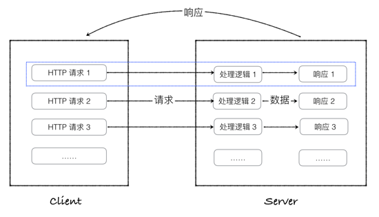

Flask简介
1. 引入
在上一节课中，说了浏览器和服务器的关系
直白点说：学习web开发就是怎样更快、更好的处理如下事情：
接收浏览器发送过来的请求
不同的请求意味着不同的url，例如：
- 注册时：http://xxx.com/register.html
定义不同的函数，每个url都对应一个独特的函数，这个函数进行逻辑处理
- 例如http://xxx.com/login.html 对应 一个函数叫做
def login(): - 例如http://xxx.com/register.html 对应一个函数叫做
def register():
- 例如http://xxx.com/login.html 对应 一个函数叫做
在函数中处理具体的逻辑，例如：
- 数据库的操作
- 用户验证、cookie、Session等操作
返回一个完整的响应数据，例如：
- 返回一个HTML页面的数据
2. Web服务器的简单理解
不一样的编程语言做web开发时，它们要做的事情其实就是上面列举的那些，无非是有的实现起来更快、更健壮、更稳定罢了
而每种编程语言中，又有不同的开发者研究出来的web程序，就导致了除了很多的web框架（程序）
Python语言中，web框架有如下常用的：
- Flask
- Django
- tornado

3. Web框架
- 什么是Web框架？
- 协助开发者快速开发 Web 应用程序的一套功能代码
- 开发者只需要按照框架约定要求，在指定位置写上自己的业务逻辑代码
- 例如：在某个区需要成立一个公司，有两种方式：
- 圈地，打地基，盖楼，装修，入驻(这种方式对应：未使用框架进行开发)
- 买楼，装修，入驻(这种方式对应：使用框架进行开发）
- 为什么要用Web框架？
web网站发展至今，特别是服务器端，涉及到的知识、内容，非常广泛。这对程序员的要求会越来越高。如果采用成熟，稳健的框架，那么一些基础的工作，比如，安全性，数据流控制等都可以让框架来处理，那么程序开发人员可以把精力放在具体的业务逻辑上面。使用框架的优点：
- 稳定性和可扩展性强
- 可以降低开发难度，提高开发效率。
总结一句话：避免重复造轮子
4. Flask
Flask诞生于2010年，是Armin ronacher（人名）用 Python 语言基于 Werkzeug 工具箱编写的轻量级Web开发框架。
Flask 本身相当于一个内核，其他几乎所有的功能都要用到扩展（邮件扩展Flask-Mail，用户认证Flask-Login，数据库Flask-SQLAlchemy），都需要用第三方的扩展来实现。比如可以用 Flask 扩展加入ORM、窗体验证工具，文件上传、身份验证等。Flask 没有默认使用的数据库，你可以选择 MySQL，也可以用 NoSQL
其WSGI工具箱采用Werkzeug（路由模块），模板引擎则使用Jinja2这两个也是 Flask 框架的核心
Flask常用扩展包：
- Flask-SQLalchemy：操作数据库；
- Flask-script：插入脚本；
- Flask-migrate：管理迁移数据库；
- Flask-Session：Session存储方式指定；
- Flask-WTF：表单；
- Flask-Mail：邮件；
- Flask-Bable：提供国际化和本地化支持，翻译；
- Flask-Login：认证用户状态；
- Flask-OpenID：认证；
- Flask-RESTful：开发REST API的工具；
- Flask-Bootstrap：集成前端Twitter Bootstrap框架；
- Flask-Moment：本地化日期和时间；
- Flask-Admin：简单而可扩展的管理接口的框架
相关网址：